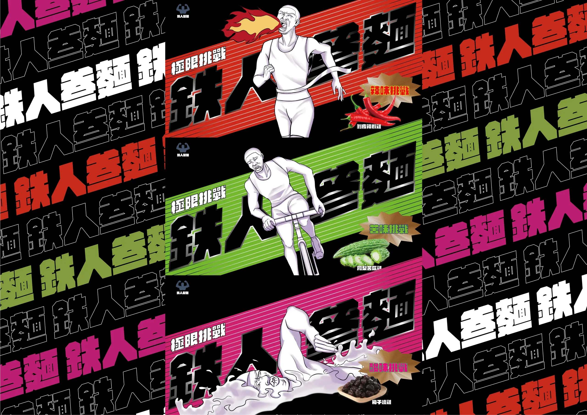
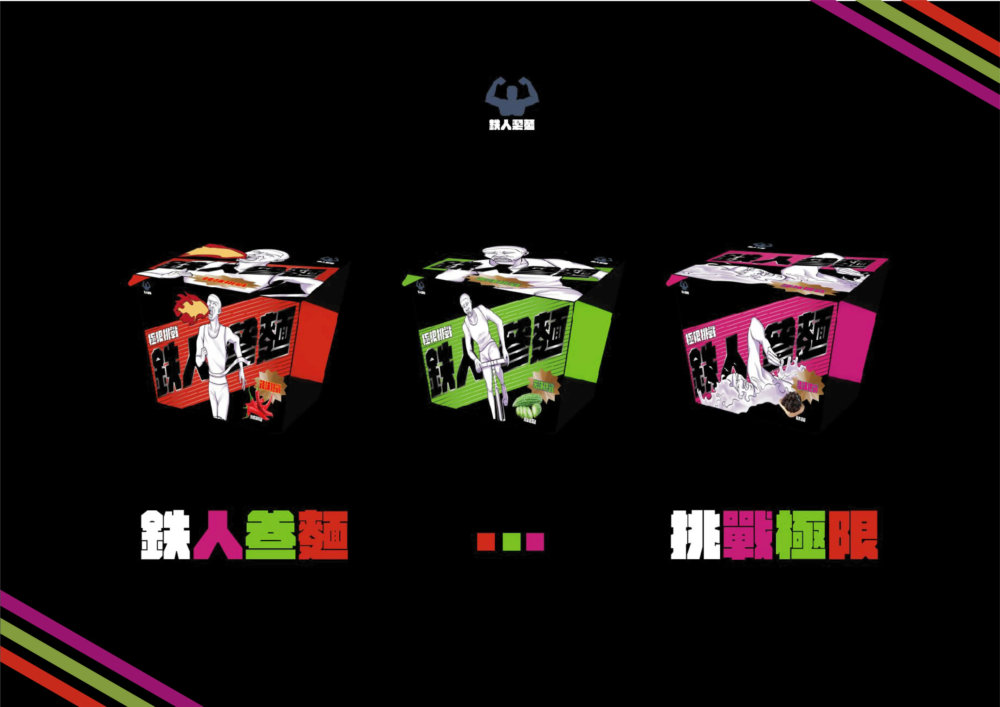
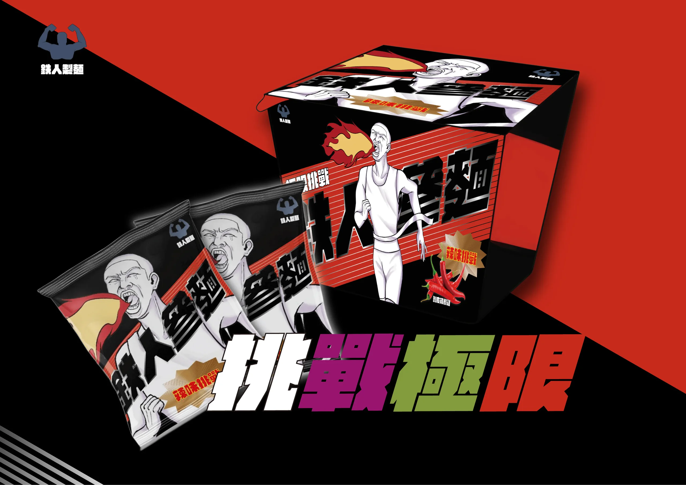
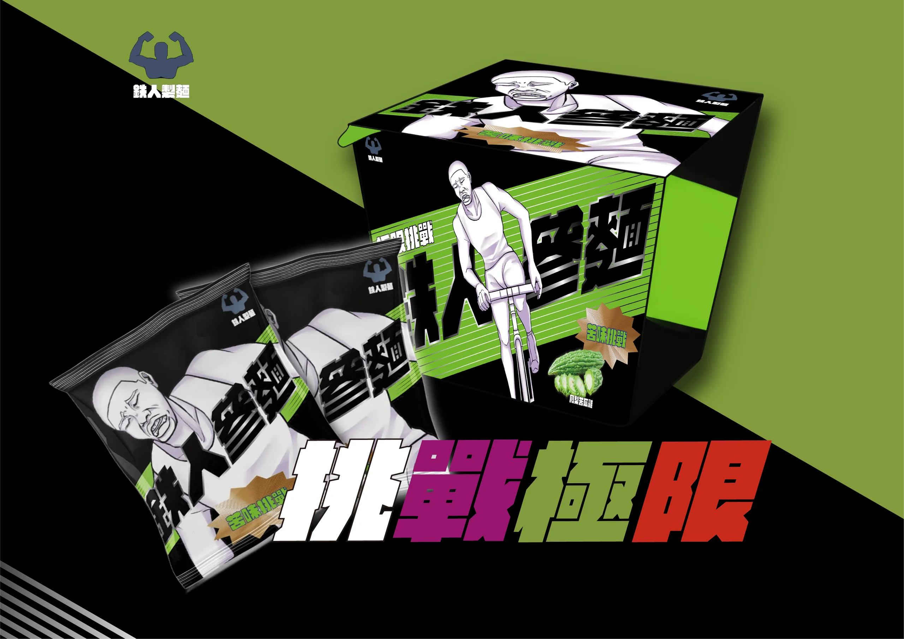
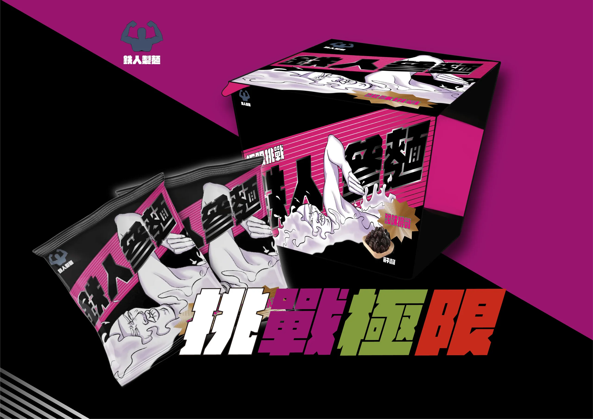

TRIATHLONNOODLES
鉄人三麵 挑戰極限鉄人三麵｜限界への挑戦
商品企劃｜品牌視覺規劃｜包裝設計｜2021商品企画｜ブランドビジュアル設計｜パッケージデザイン｜2021
Design Concept｜設計概念Design Concept｜デザインコンセプト
- CATEGORY
- BRAND / VISUAL COMMUNICATION
- COLOR PALETTE
- CREDIT
- KAYA｜陳致伶｜吳政欣｜張靜慧
以「挑戰自我」為核心，推出辣、苦、酸三款挑戰感官的泡麵，將鐵人三項精神轉化為產品系列概念。
「自分への挑戦」を軸に、辛味・苦味・酸味の3種類の即席麺を企画しました。トライアスロンの精神を、味覚に挑む商品シリーズへ展開しています。
激辣長跑：以辣椒口味與奔跑意象，呈現挑戰辣度、全力衝刺的感受。
激辛ランニング：唐辛子味と走るイメージで、辛さに挑み全力で駆け抜ける感覚を表現しました。
激苦自行車：以苦瓜口味連結騎行中的苦練，傳達突破挑戰後甘甜的期待。
激苦サイクリング：ゴーヤ味を自転車の苦しい道のりに重ね、挑戦の先にある達成感を表現しました。
激酸游泳：以酸梅口味與游泳意象呈現強烈酸感，帶出挑戰後的暢快。
激酸スイミング：梅の酸味と泳ぐイメージで、強い刺激と挑戦後の爽快感を表現しました。